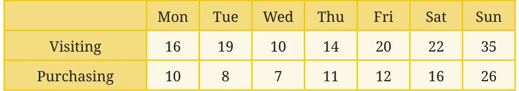
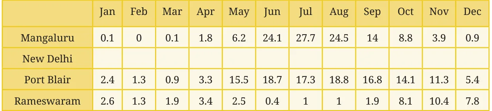
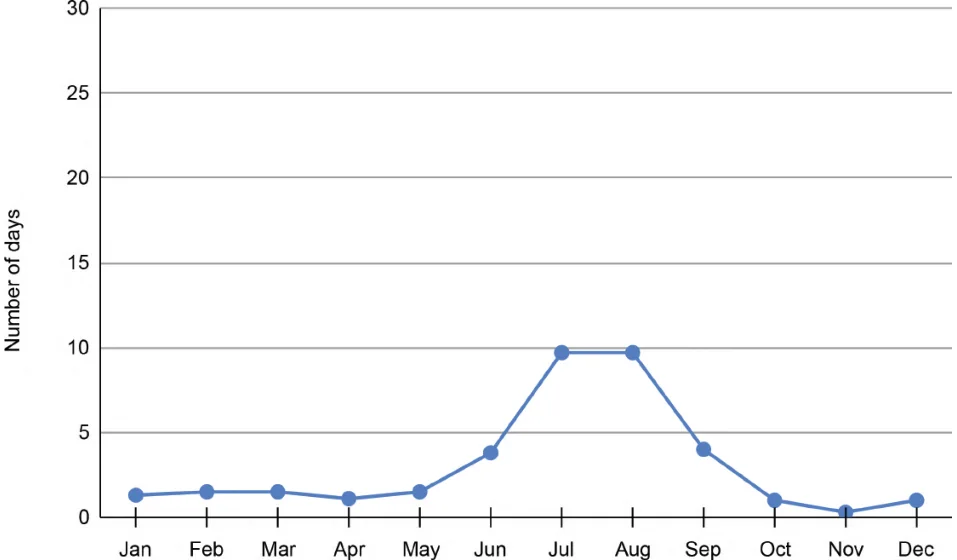
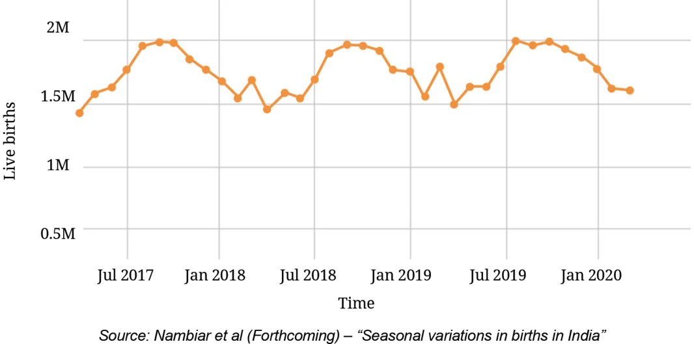

Figure it Out
- The average number of customers visiting a shop and the average number of customers actually purchasing items over different days of the week is shown in the table below. Visualise this data on a line graph.

- The average number of days of rainfall in each month for a few cities is shown in the table below:

- What could be the possible method to compile this data?
- Mark the data for Mangaluru, Port Blair, and Rameswaram in the line graph shown below. You can round off the values to the nearest integer.

Source: weather-and-climate.com

- Based on the line for New Delhi in the graph, fill the data in the table.
- Which city among these receives the most number of days of rainfall per year? Which city gets the least number of days of rainfall per year?
- Looking at the table, when is the rainy season in New Delhi and Rameswaram?
- The following line graph shows the number of births in every month in India over a time period:

- What are your observations?
- What was the approximate number of births in July 2017?
- What time period does the graph capture?
- Compare the number of births in the month of January in the years 2018, 2019, and 2020.
- Estimate the number of births in the year 2019.